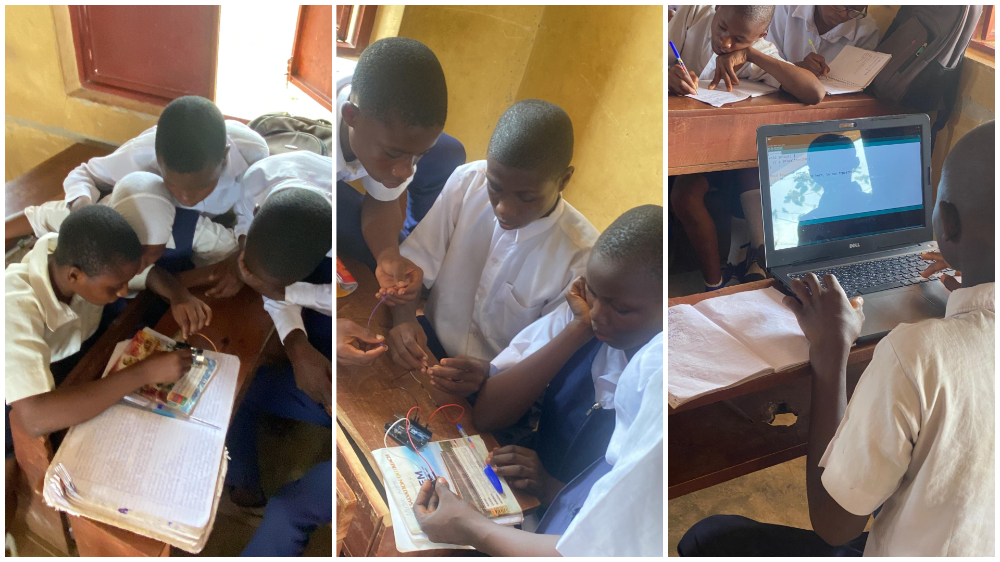
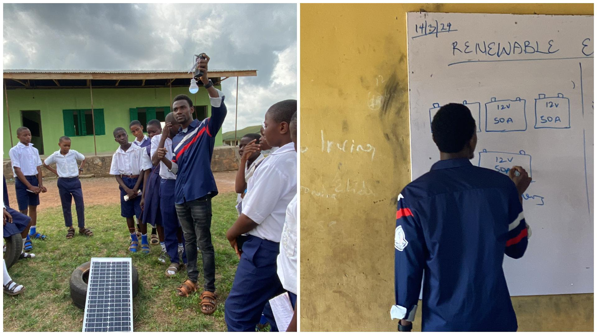

At Beje High School, the first visit started with a simple question: how much do students really understand about technology? The answer was clear. For many, it was unfamiliar territory. Concepts like coding, digital systems, and emerging technologies were new—distant, even. But that distance didn’t last long.
The First Shift: Making Technology Understandable
The session began by connecting technology to what students already knew—science subjects, everyday tools, and familiar experiences. Then came something different. Coding was introduced not as complex syntax, but as logic—broken down into relatable language structures and applied through Arduino systems. What once felt abstract began to make sense.
“Understanding begins when learning feels familiar.”
From there, the class moved into digital making and physical computing. Students began thinking in steps, designing simple algorithms, and seeing how instructions translate into real actions. For many, it was the first time technology felt something they could engage with—not just observe.

Students during a Tech with Khalid Foundation (TWiK) session at Beje High School.
Expanding Possibilities
The session didn’t stop at coding. Students were introduced to emerging fields—robotics, artificial intelligence, blockchain, and more—alongside practical experiences like virtual reality. It wasn’t just about exposure. It was about expanding what students believed was possible.
“Exposure changes how students see the world—and their place in it.”
The Second Shift: From Learning to Application
When the team returned, the focus changed. This time, it wasn’t just about understanding technology. It was about using it. The session introduced renewable energy—connecting technology directly to a real and familiar challenge: electricity. Students learned how solar panels convert sunlight into electricity and how complete systems are built using panels, batteries, charge controllers, and loads. Then they did something more important. They built.

Hands-on renewable energy session at Beje High School.
Through hands-on sessions, they connected components, tested configurations, and explored battery arrangements in series and parallel. What was once theory became something real—something they could see working in front of them.
What Changed
The transformation wasn’t just in what students learned. It was in how they engaged. Questions became deeper.Participation became active. Confidence began to show. Students who started with little exposure were now thinking about how technology could be applied to solve real problems around them.
“When students move from observing to building, something shifts.”
The Bigger Reality
Across many schools, students are ready to learn and build. What often holds them back is not ability—but access. Access to devices. Access to tools. Access to consistent opportunities. And yet, when even a small opportunity is introduced, the response is immediate.
The Role of Tech with Khalid Foundation
At Tech with Khalid Foundation (TWiK), the goal is simple: create opportunities where students can turn ideas into reality. Because the difference is rarely intelligence. It is access. Access to tools. Access to guidance. Access to the chance to try. The sessions at Beje High School are just one example of what happens when students are given that access.
“Background should never define potential.”
What Comes Next
The sessions at Beje High School are just one example of what is possible. There are many more classrooms like this—filled with students ready to learn, ready to build, ready to go further. What they need is access.
Support the Next Classroom
More students are ready to experience this shift—from curiosity to capability.
Your support can help provide: